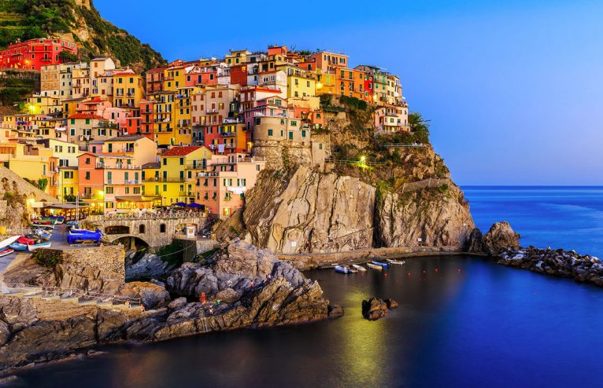
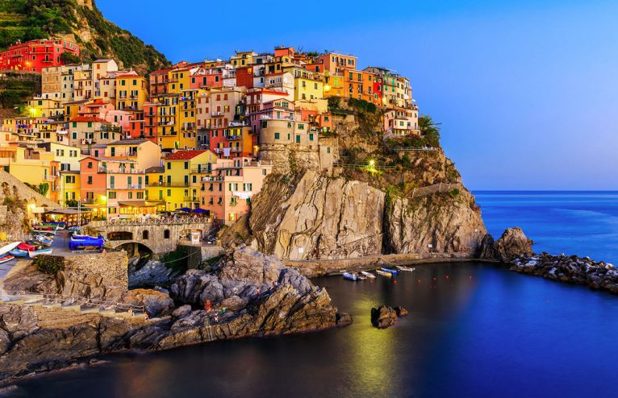

The name "Cinque Terre" translates to "Five Lands," referring to the five colorful, cliffside villages: Monterosso al Mare, Vernazza, Corniglia, Manarola, and Riomaggiore. The entire area, including its coastline and hillsides, is a UNESCO World Heritage Site.
Cars are banned in the villages! Instead, visitors travel by train, boat, or on foot via scenic hiking trails that connect the villages. The absence of cars helps preserve the area's charm and tranquility.
Cinque Terre is famous for its terraced hillsides, where locals have grown grapes and olives for over 1,000 years. The unique landscape is supported by over 4,000 miles of dry stone walls, making it a labor-intensive yet stunning feat of engineering.
The region produces a rare dessert wine called Sciacchetrà, made from partially dried grapes. It's said that Sciacchetrà was favored by poets and explorers, including Pliny the Elder, who praised the wine in ancient Roman times.
The famous "Blue Path" is a scenic hiking trail that connects all five villages. The trail offers breathtaking views of the Mediterranean Sea, but some sections can be challenging. One stretch, the Via dell'Amore (Lover's Lane) between Riomaggiore and Manarola, is much easier and particularly romantic.
 
